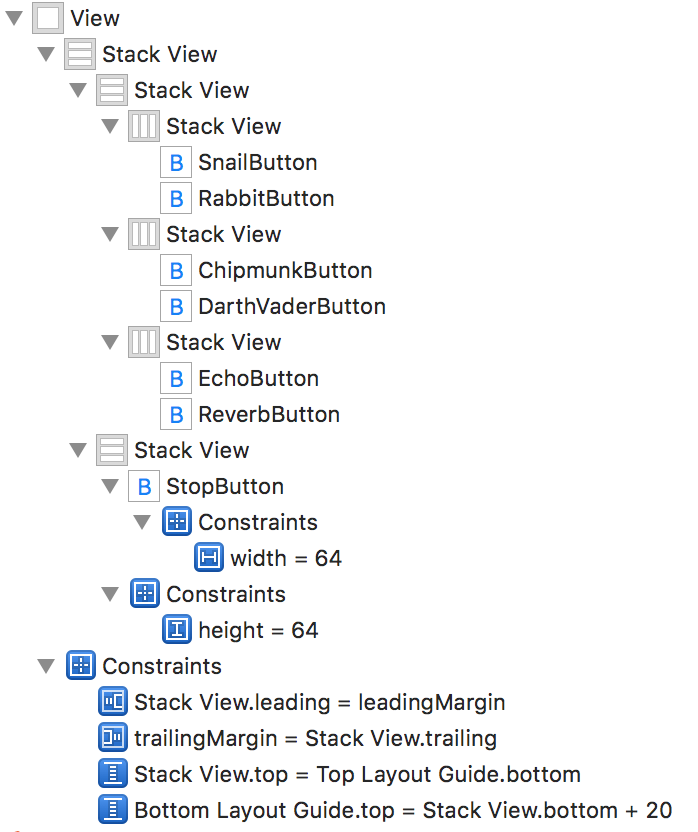
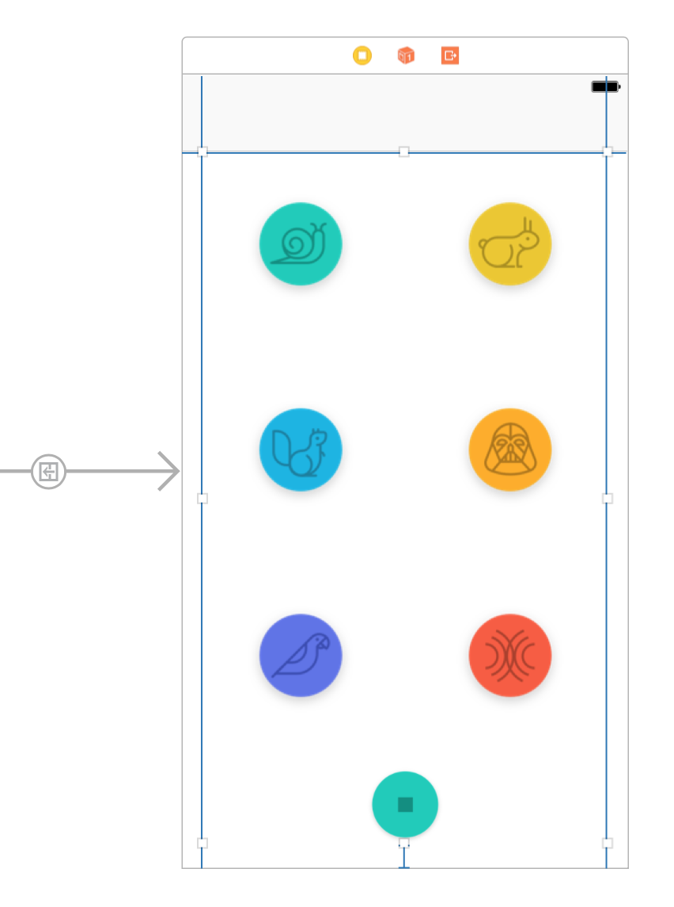

Playback and Audio Effects
1. Lesson Overview
2. StackViews As A Concept
Remember that many of the UI Elements you have come to know, such
as UIButton and UILabel, are subclasses
of UIView. In fact, all UI Elements that you are
going to be using in iOS come from UIView, as they
have to know how to draw or render themselves.
3. Inserting The StackViews (PlaybackView)
If you want to read more about UIStackViews there are a few great places to start:
4. Snail And Rabbit Button Icons
5. StackViews For Chipmunk And Darth Vader
6. Stackviews for Echo + Reverb and Stopping Playback
Add StackViews, Buttons, and Constraints
Follow similar steps as you saw in the previous video to add two
more stack views and the appropriate buttons and constraints to
the PlaySoundsViewController. When you're done, the Document
Outline should look like this...

And the interface should look like this...
In this image, the outermost stack view is selected so you can see the constraints applied to it.
7. Wiring Up Buttons (IBOutlets+IBActions)
Wiring Up Buttons (IBOutlets+IBActions)
Here is the boilerplate code you can use to follow along:
IBOutlets
@IBOutlet weak var snailButton: UIButton!
@IBOutlet weak var chipmunkButton: UIButton!
@IBOutlet weak var rabbitButton: UIButton!
@IBOutlet weak var vaderButton: UIButton!
@IBOutlet weak var echoButton: UIButton!
@IBOutlet weak var reverbButton: UIButton!
@IBOutlet weak var stopButton: UIButton!
IBActions
@IBAction func playSoundForButton(_ sender: UIButton) {
print("Play Sound Button Pressed")
}
@IBAction func stopButtonPressed(_ sender: AnyObject) {
print("Stop Audio Button Pressed")
}
8. Troubleshooting IBOutlets And IBActions
9. Adding The Audio Extension
Adding The Audio Extension
Paste the following code below the button outlets in
PlaySoundsViewController:
var recordedAudioURL:URL!
var audioFile:AVAudioFile!
var audioEngine:AVAudioEngine!
var audioPlayerNode: AVAudioPlayerNode!
var stopTimer: Timer!
enum ButtonType: Int {
case slow = 0, fast, chipmunk, vader, echo, reverb
}
Your viewWillAppear will contain the following:
override func viewWillAppear(_ animated: Bool) {
configureUI(.notPlaying)
}
Please see the PlaySoundsViewController+Audio.swift
file located on this page. Download and use this file.
10. Playing Back Audio
Paste the below for the playSoundForButton function:
@IBAction func playSoundForButton(_ sender: UIButton) {
switch(ButtonType(rawValue: sender.tag)!) {
case .slow:
playSound(rate: 0.5)
case .fast:
playSound(rate: 1.5)
case .chipmunk:
playSound(pitch: 1000)
case .vader:
playSound(pitch: -1000)
case .echo:
playSound(echo: true)
case .reverb:
playSound(reverb: true)
}
configureUI(.playing)
}